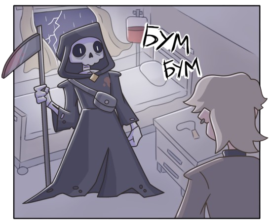
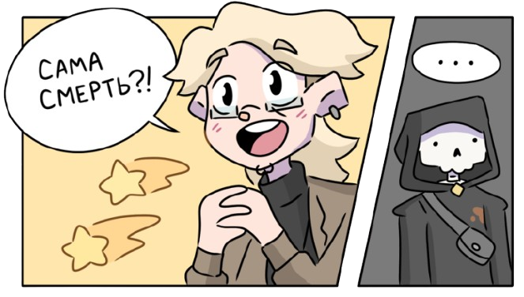
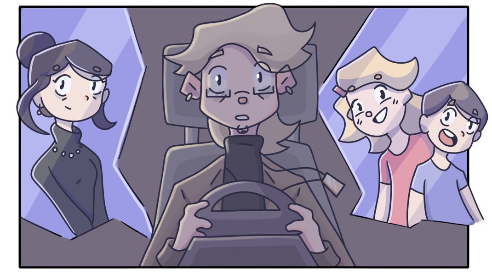
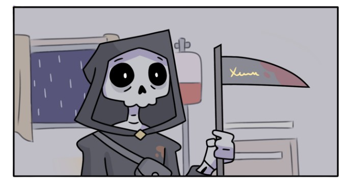
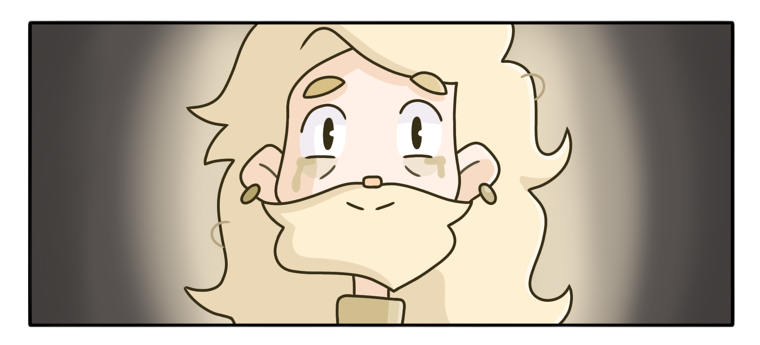
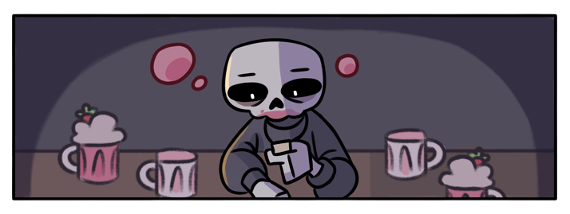

Обложка комикса

Нажмите на черепок что-бы читать комикс!
Привет! Вы попали на оффициальный сайт комикса "Смерть и Хамато"
Обложка комикса
Нажмите на черепок что-бы читать комикс!
|  | Краткий синопсис комикса: После того как Хамато попадает в больницу, он встречает Смерть! Казалось бы, исход очевиден, но Смерти очень нравится манга за авторством Хамато. Что же выйдет из этой встречи? |
Почему вам стоит прочитать комикс?
 |
|
Краткий синопсис глав (спойлеры!)
|  | 1 глава - Последний рабочий день Мангака Хамато Кодзиро попадает в аварию на пути на работу и умирает. Тем временем в загробном мире одной из смертей которая читает мангу Хамато дают дело его души |
|  | 2 глава - Смерть не стучится в двери Семья Хамато волнуется о нем. Смерть приходит к Хамато в больницу, и тот не понимает, что смерть пришла за ним. Смерть узнает о том, что Хамато - автор его любимой манги |
|  | 3 глава - Пока смерть не разлучит нас Смерть (Боджи) становится боссом в своей компании и спустя 10 лет снова встречает Хамато в больнице |
|  | 4 глава - Когда ты умрешь, ты станешь солнцем Боджи впадает в депрессию после смерти Хамато и отдает свой пост Бенжамину. Тем временем Жизнь пытается взбодрить Боджи |

Еще раз привет, я Sawi725 - автор комикса "Смерть и Хамато"
"Смерть и Хамато" был нарисован мной в 16 лет и является моей первой авторской работой. Создавая эту историю, я лишь хотел получить опыт в создании комиксов, но кажется эта вселенная меня немного затянула, хаха. Буду рад если вы прочитаете мой комикс, а может даже поддержите меня словесно или финансово
 |
|
| Мой телеграмм канал | Поддержать копеечкой |